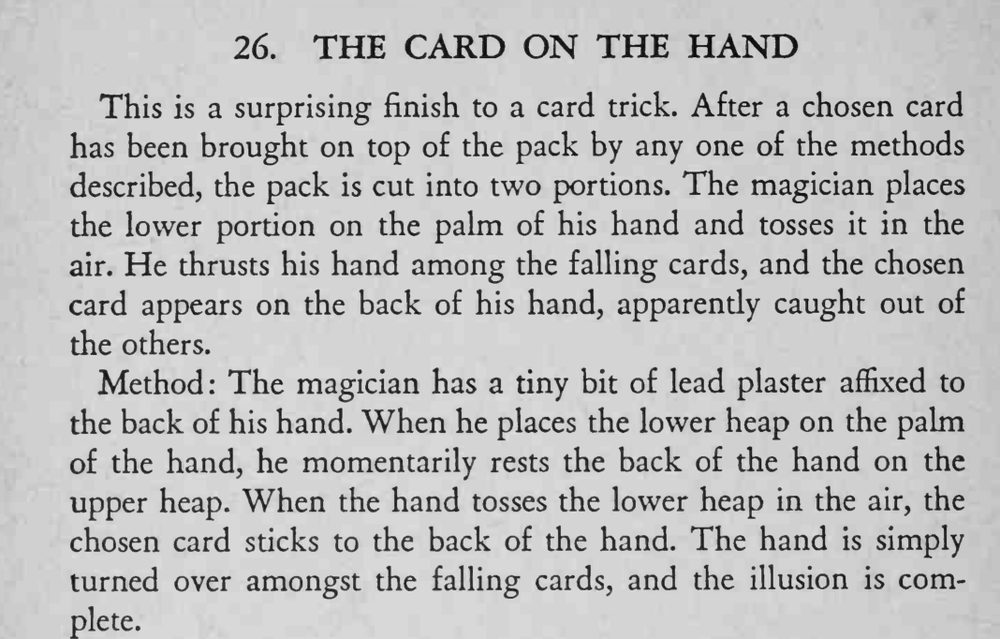

魔术师把半叠牌抛向空中，再把手伸进纷落的牌里，选牌竟然贴在他的手背上，像是被一把抓住。
铅膏只要一点点，手背靠上去时动作要轻，别把牌压歪。

This is a surprising finish to a card trick. After a chosen card has been brought on top of the pack by any one of the methods described, the pack is cut into two portions. The magician places the lower portion on the palm of his hand and tosses it in the air. He thrusts his hand among the falling cards, and the chosen card appears on the back of his hand, apparendy caught out of the others. Method: The magician has a tiny bit of lead plaster affixed to the back of his hand. When he places the lower heap on the palm of the hand, he momentarily rests the back of the hand on the upper heap. When the hand tosses the lower heap in the air, the chosen card sticks to the back of the hand. The hand is simply turned over amongst the falling cards, and the illusion is complete.